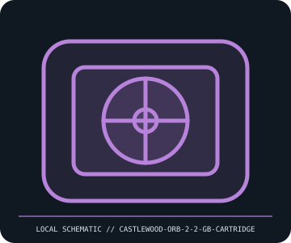

[ REMOVABLE MEDIA // MODEL-SPECIFIC RECORD ]
Castlewood ORB 2.2 GB Removable Cartridge
Castlewood ORB 2.2 GB removable rigid-disk media, circa 1999. This catalog entry distinguishes the removable medium from its drive/reader and calls out model-specific fit and format caveats.

IDENTIFICATION: Transcribe the entire model/part number, capacity, generation and revision from the label or packaging. Confirm the exact host-device manual before inserting or writing.
Format, capacity and compatibility
| Product / part ID | Castlewood ORB 2.2 GB Removable Cartridge |
|---|---|
| Generation / format | Castlewood ORB 2.2 GB removable rigid-disk media, circa 1999 |
| Capacity and medium | 2.2 GB nominal removable magnetic-disk cartridge; the rotating disk is sealed in the cartridge. Cataloged here as the medium, not as the external USB/SCSI/FireWire or internal EIDE drive. |
| Compatibility | Requires a Castlewood ORB drive, and the host must support the drive interface (ORB2SE00 SCSI, ORB2SI01A internal SCSI and other interface-specific variants exist). ORB 2.2 GB is not interchangeable with later 5.7 GB media unless that exact drive manual confirms support. |
| Version and model caveat | Capacity variants include 2.2 GB and later 5.7 GB. The drive model/interface and cartridge generation matter; hot-swap behavior applies only to supported external interfaces and operating-system drivers. |
Handling and preservation
Keep in the rigid case; avoid shock, vibration during access, direct sun, dust, and temperature shock. Do not open the cartridge. Keep unique data in multiple verified copies and avoid repeated power cycles of aging ORB drive mechanisms.
- Preserve original packaging, label, acquisition notes and any write-protect state; photograph the media before use.
- Make at least two independent copies of valuable data, verify checksums, and periodically test a restore. A removable cartridge or card alone is not an archival strategy.
Model and version notes
Capacity variants include 2.2 GB and later 5.7 GB. The drive model/interface and cartridge generation matter; hot-swap behavior applies only to supported external interfaces and operating-system drivers.
Standards and product-family sources establish the generation; exact model manuals, labels, regional revisions, firmware, interface and host support determine actual interchangeability.
Sources and standards
- Castlewood ORB USB 2.2 GB Owner’s ManualPeriod manual documents the 2.2 GB cartridge system and USB-drive-specific use; other interfaces have different manuals.
- Computer History Museum — Castlewood ORB 2.2 GB external driveCollection record provides product context and helps distinguish the removable cartridge from the drive.
Manufacturer and standards references are preferred; archival manuals or museum records are identified when products are discontinued. Capacity and compatibility claims are scoped to the specific SKU and generation named above.